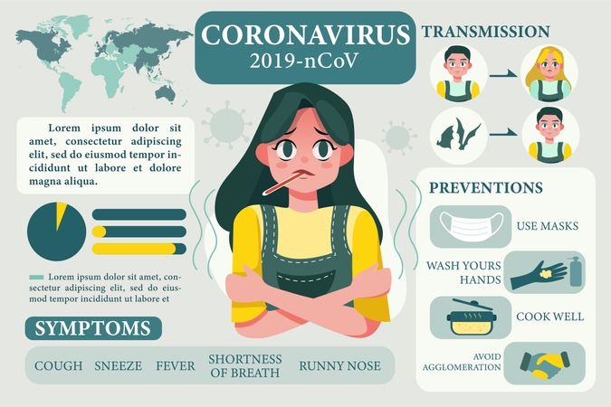

Hello World!
What is Fiver and how does it work?
Fiverr is a marketplace that connects buyers and sellers. For examples, buyers look for services within a lot of categories like music and audio, video and animation and others. Meanwhile, seller are the people offering those services. So, they create Gigs that buyers pay forFiverr was founded by Micha Kaufman and Shai Wininger, and was launched in February 2010. The founders came up with the concept of a marketplace that would provide a two sided platform for people to buy and sell a variety of digital services typically offered by freelance contractors. Services offered on the site include writing, translation, graphic design, video editing and programming.[4][5][6]Fiverr's services start at US$5, and can go up to thousands of dollars with gig extras. Each service offered is called a "gig".[7]
The website was launched in early 2010 and by 2012 was hosting over 1.3 million Gigs.[8]
The website transaction volume has grown 600% since 2011. Additionally, Fiverr.com has been ranked among the top 100 most popular sites in the United States and top 200 in the world since the beginning of 2013.[9]
On June 1, 2010, Fiverr received a seed investment of US$1 million from Guy Gamzu and other angel investors, and in May 2012, Fiverr secured US$15 million in funding from Accel Partners and Bessemer Venture Partners, bringing the company's total funding to US$20 million.[3]
In December 2013, Fiverr released their iOS app in the Apple App Store,[10] and in March 2014, Fiverr released their Android app in the Google Play store.[11]
During August 2014, Fiverr announced that it had raised US$30 million in a Series C round of funding from Bessemer Venture Partners, Accel (formerly known as Accel Partners) and other investors. The round brings their total funding to date to US$50 million.[3]
In October 2015, Amazon.com started legal action against 1,114 Fiverr sellers it claims provide fake reviews on the US version of its website. Fiverr did not dispute Amazon's allegations and stated: "As Amazon noted, we have worked closely together to remove services that violate our terms of use, and respond promptly to any reports of inappropriate content."[12]
In November 2015, Fiverr announced that it had raised US$60 million in a Series D round of funding, led by Square Peg Capital. The round brings their total funding to date to $110 million.[13] At the same time, the company announced that it was expanding the marketplace to allow sellers the ability to price productized services, known as Gigs, at prices above the original US$5 price.[14] In June 2019, it listed on NYSE.[15]...Continue Reading
What is Blog?
A blog (a truncation of "weblog")[1] is a discussion or informational website published on the World Wide Web consisting of discrete, often informal diary-style text entries (posts). Posts are typically displayed in reverse chronological order, so that the most recent post appears first, at the top of the web page. Until 2009, blogs were usually the work of a single individual,[citation needed] occasionally of a small group, and often covered a single subject or topic. In the 2010s, "multi-author blogs" (MABs) emerged, featuring the writing of multiple authors and sometimes professionally edited. MABs from newspapers, other media outlets, universities, think tanks, advocacy groups, and similar institutions account for an increasing quantity of blog traffic. The rise of Twitter and other "microblogging" systems helps integrate MABs and single-author blogs into the news media. Blog can also be used as a verb, meaning to maintain or add content to a blog. The emergence and growth of blogs in the late 1990s coincided with the advent of web publishing tools that facilitated the posting of content by non-technical users who did not have much experience with HTML or computer programming. Previously, a knowledge of such technologies as HTML and File Transfer Protocol had been required to publish content on the Web, and early Web users therefore tended to be hackers and computer enthusiasts. In the 2010s, the majority are interactive Web 2.0 websites, allowing visitors to leave online comments, and it is this interactivity that distinguishes them from other static websites.[2] In that sense, blogging can be seen as a form of social networking service. Indeed, bloggers do not only produce content to post on their blogs, but also often build social relations with their readers and other bloggers.[3] However, there are high-readership blogs which do not allow comments. Many blogs provide commentary on a particular subject or topic, ranging from politics to sports. Others function as more personal online diaries, and others function more as online brand advertising of a particular individual or company. A typical blog combines text, digital images, and links to other blogs, web pages, and other media related to its topic. The ability of readers to leave publicly viewable comments, and interact with other commenters, is an important contribution to the popularity of many blogs. However, blog owners or authors often moderate and filter online comments to remove hate speech or other offensive content. Most blogs are primarily textual, although some focus on art (art blogs), photographs (photoblogs), videos (video blogs or "vlogs"), music (MP3 blogs), and audio (podcasts). In education, blogs can be used as instructional resources. These blogs are referred to as edublogs. Microblogging is another type of blogging, featuring very short posts. 'Blog' and 'blogging' are now loosely used for content creation and sharing on social media, especially when the content is long-form and one creates and shares content on regular basis. So, one could be maintaining a blog on Facebook or blogging on Instagram. On February 16, 2011, there were over 156 million public blogs in existence. On February 20, 2014, there were around 172 million Tumblr[4] and 75.8 million WordPress[5] blogs in existence worldwide. According to critics and other bloggers, Blogger is the most popular blogging service used today. However, Blogger does not offer public statistics.[6][7] Technorati lists 1.3 million blogs as of February 22, 2014.[8]...Continue ReadingWhat is Corona Virus and why should we stay home?
Coronavirus disease 2019 (COVID-19) is an infectious disease caused by severe acute respiratory syndrome coronavirus 2 (SARS-CoV-2).[7] The disease was first identified in December 2019 in Wuhan, the capital of China's Hubei province, and has since spread globally, resulting in the ongoing 2019–20 coronavirus pandemic.[8][9] Common symptoms include fever, cough, and shortness of breath.[4]
Other symptoms may include fatigue, muscle pain, diarrhea, sore throat, loss of smell, and abdominal pain.[4][10][11] The time from exposure to onset of symptoms is typically around five days but may range from two to fourteen days.[4][12] While the majority of cases result in mild symptoms, some progress to viral pneumonia and multi-organ failure.[8][13] As of 16 April 2020, more than 2.06 million cases have been reported across 210 countries and territories,[14] resulting in more than 137,000 deaths. More than 512,000 people have recovered.[6]
The virus is primarily spread between people during close contact,[a] often via small droplets produced by coughing,[b] sneezing, or talking.[5][15][17] While these droplets are produced when breathing out, they usually fall to the ground or onto surfaces rather than being infectious over long distances.[5][18][19] People may also become infected by touching a contaminated surface and then their face.[5][15] The virus can survive on surfaces for up to 72 hours.[20] It is most contagious during the first three days after the onset of symptoms, although spread may be possible before symptoms appear and in later stages of the disease.[21]
The standard method of diagnosis is by real-time reverse transcription polymerase chain reaction (rRT-PCR) from a nasopharyngeal swab.[22] Chest CT imaging may also be helpful for diagnosis in individuals where there is a high suspicion of infection based on symptoms and risk factors; however, it is not recommended for routine screening.[23][24]
Recommended measures to prevent infection include frequent hand washing, maintaining physical distance from others (especially from those with symptoms), covering coughs and sneezes with a tissue or inner elbow, and keeping unwashed hands away from the face.[25][26] The use of masks is recommended for those who suspect they have the virus and their caregivers.[27] Recommendations for mask use by the general public vary, with some authorities recommending against their use, some recommending their use, and others requiring their use.[28][29][30] Currently, there is no vaccine or specific antiviral treatment for COVID-19.[5] Management involves treatment of symptoms, supportive care, isolation, and experimental measures.[31]
The World Health Organization (WHO) declared the 2019–20 coronavirus outbreak a Public Health Emergency of International Concern (PHEIC)[32][33] on 30 January 2020 and a pandemic on 11 March 2020.[9] Local transmission of the disease has been recorded in many countries across all six WHO regions.[34]...Continue Reading
Lets watch some short videos and create awarness about corona virus